Clickable mock-up: page-sections.html — the bar at the top switches section, S4 layout, S2 mode and language. Card check: cards-check.html.
Left: 1440. Right: 390. English shown; the Slovak versions are in the same folder as *-sk-390.png.
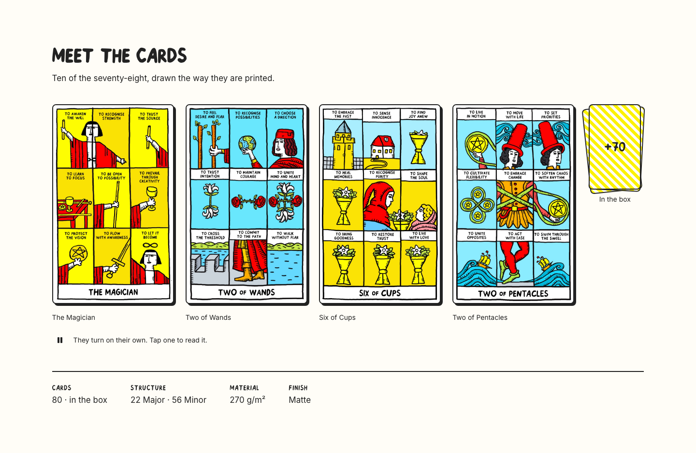
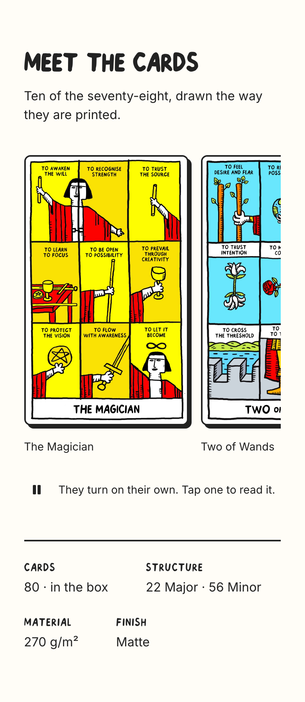
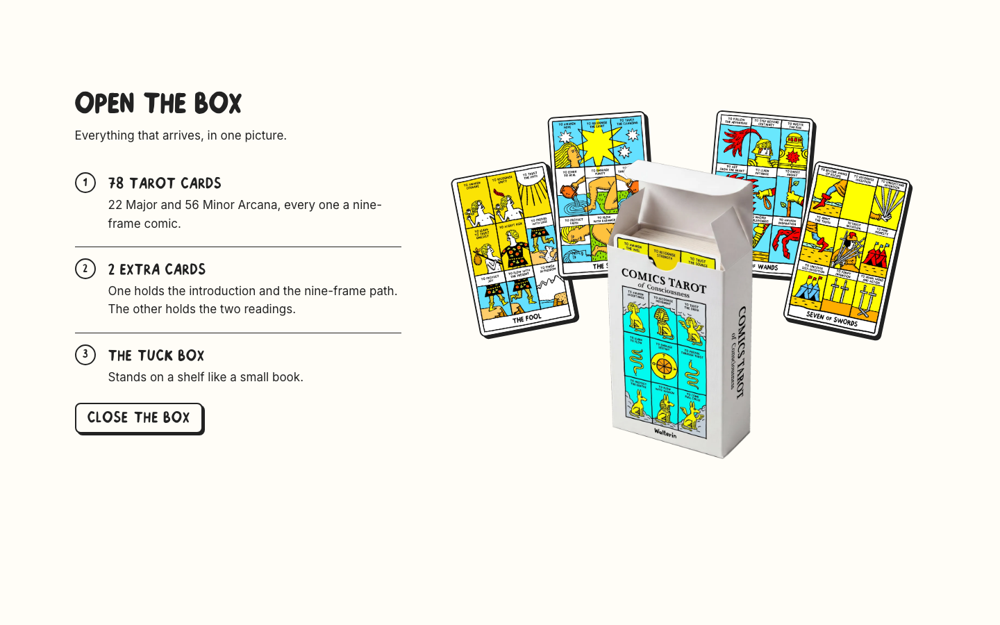
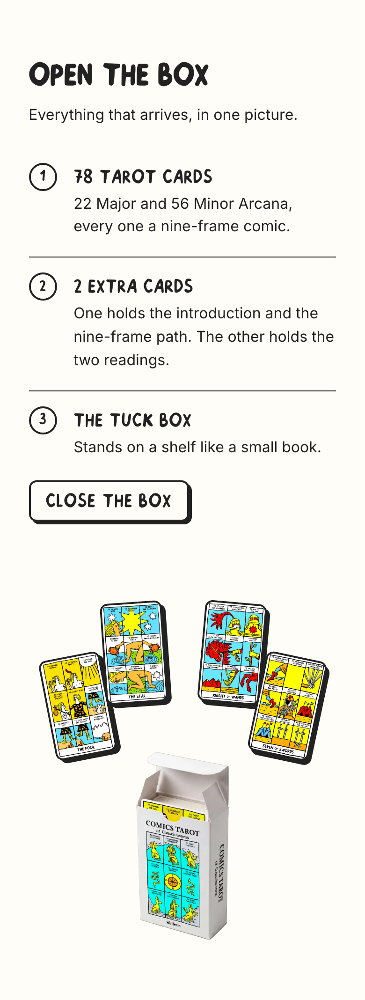
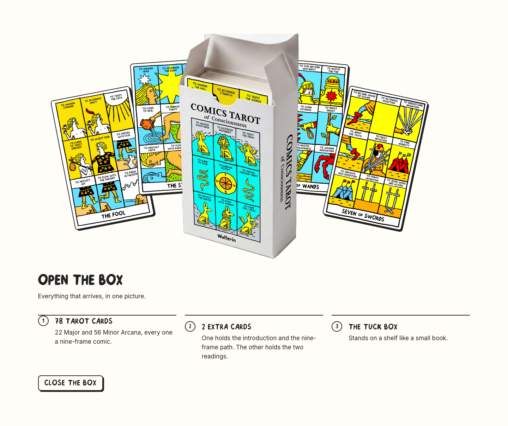
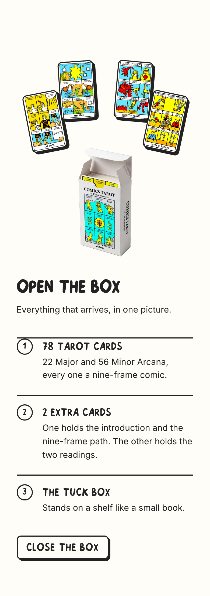
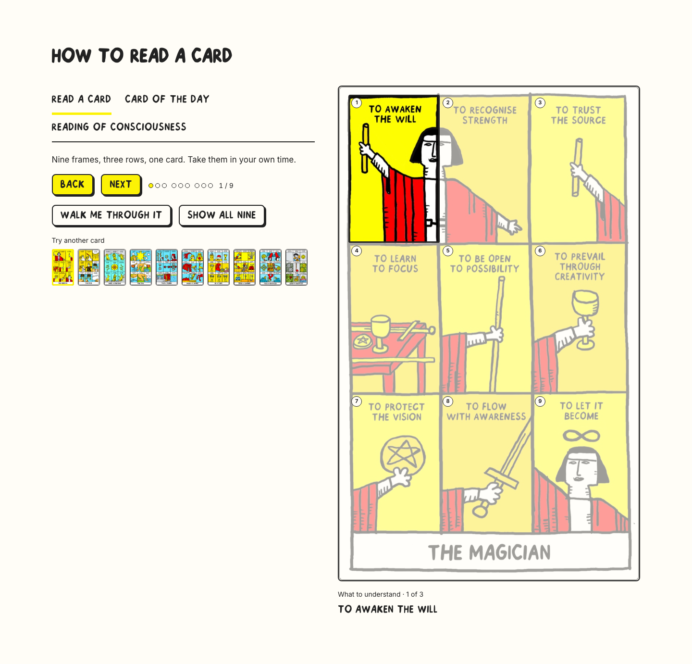
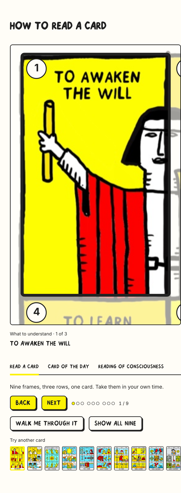
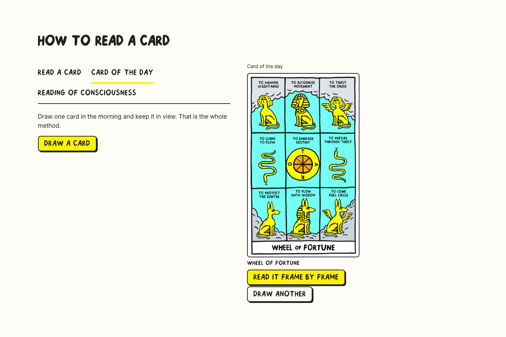
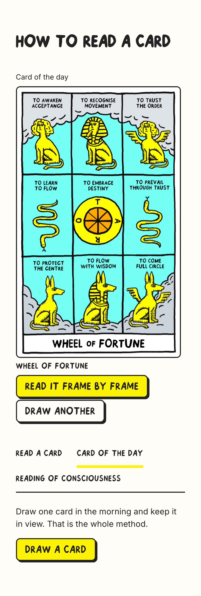
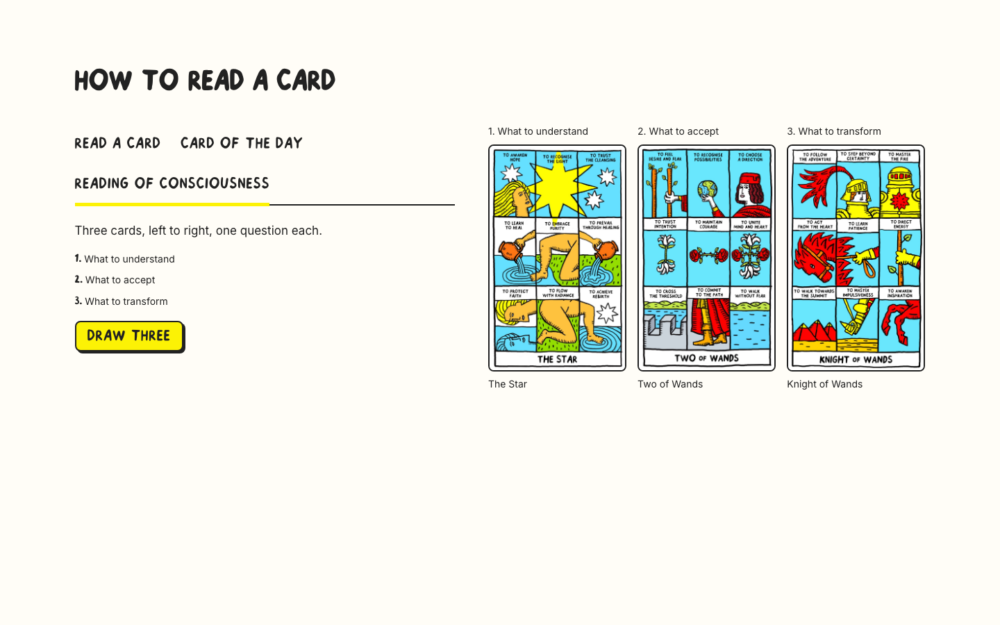
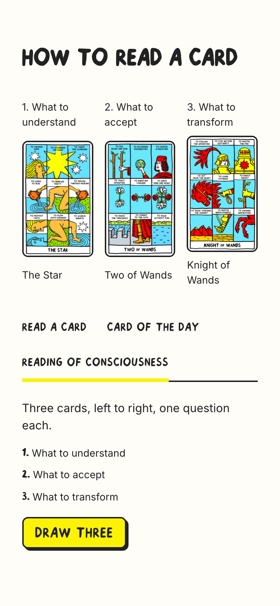
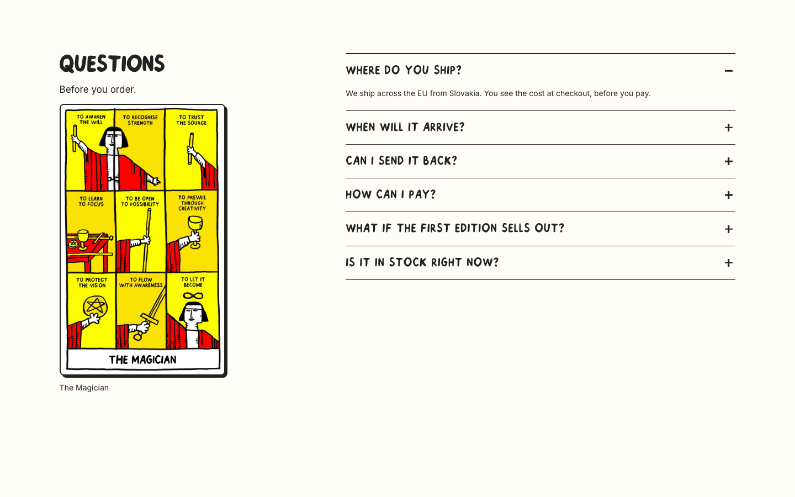
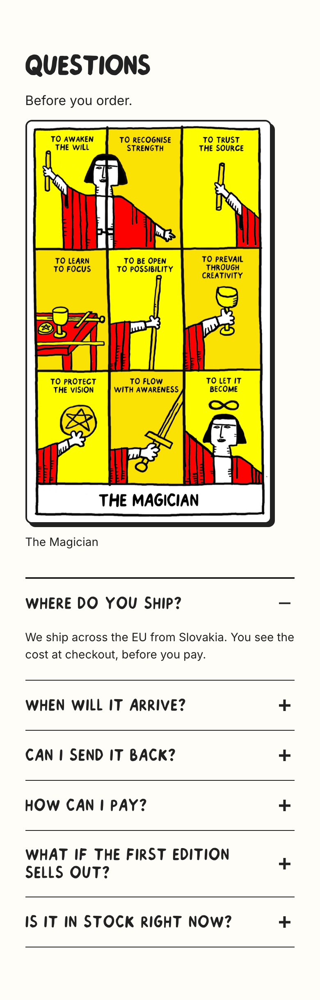
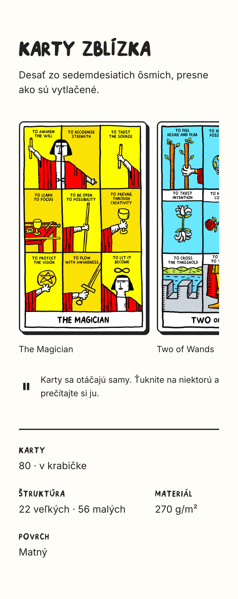
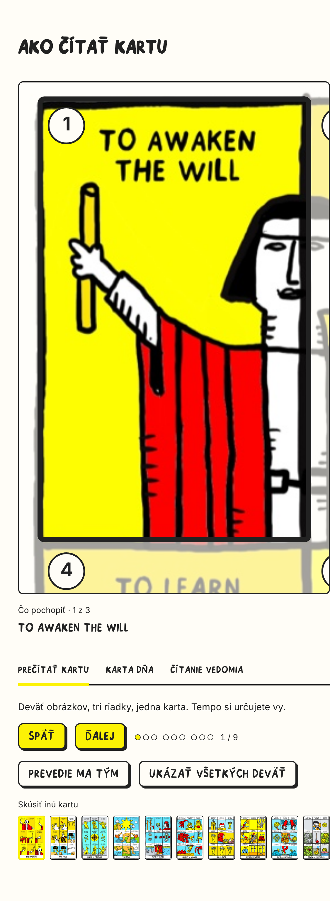